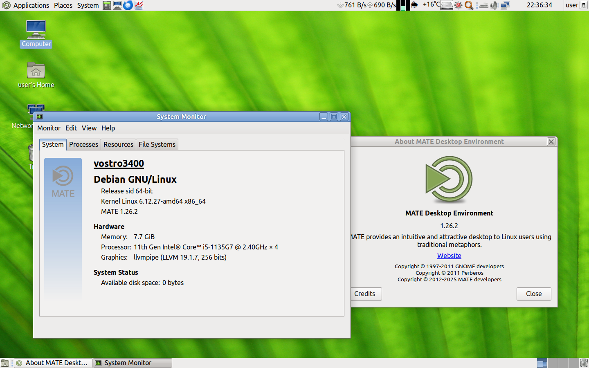
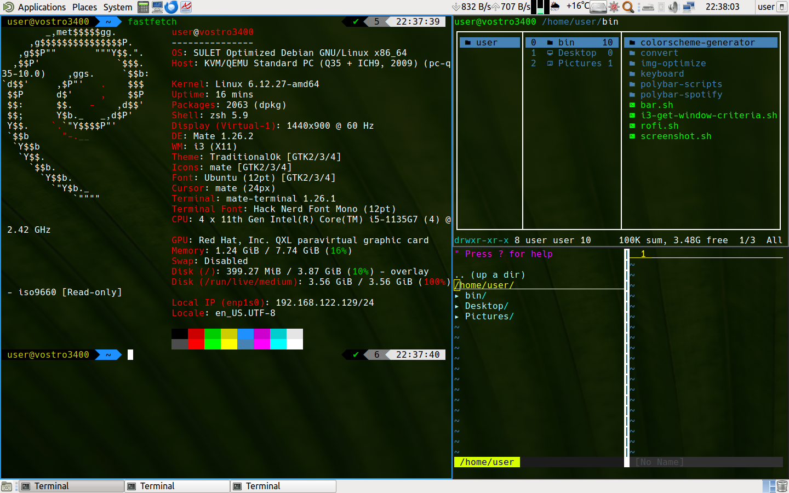

系统介绍
 本次更新主要内容：
- 中文改用文泉驿字体，更加轻量
- 修复LibreOffice汉化不完全的问题
- 减小iso体积，仅3.13GB, 低于Debian官方lxde的livecd（最小的桌面livecd）
5.0更新主要内容：
- 升级到Debian Sid 全新从零构建
- 去除一切美化效果，采用TraditioalOk(原gnome2里的clearlooks)为默认主题，加快运行速度，提高性能和界面辨识度，适合专业人士使用
- 进一步进行了精简，去除不必要的内容，减少资源浪费
- LiveCD默认使用root账户登录，方便进行系统管理，建议一定要慎重操作，安装到硬盘还是需要创建普通用户
- 修复了一些已知问题
系统要求
| 组件 | 最低要求 | 推荐要求 |
|---|---|---|
| 处理器 | X86-64 CPU 1GHz | X86-64 多核 CPU 2GHz 以上 |
| 内存 | 2GB | 4GB 以上 |
| 硬盘空间 | 10GB | 30GB 以上 |
| 其他 | 支持 USB 接口 | 支持 USB 3.0 接口，连接到互联网 |
系统特性
- 预装常用驱动程序
- 基于Debian sid，滚动更新，软件始终保持最新
- 稳定性高，真机实测，Debian是一个以稳定性著称的发行版
- 集成常用软件，包括办公，网页浏览，图片处理，输入法等，开箱即用
- 完全纯净，无广告，无捆绑
- 人性化操作，采用广受欢迎的GNOME 2桌面的延续-MATE桌面环境，经典易于上手
- 采用定制的Xfce和i3wm，无缝切换，提高效率
- 轻量高效，占用资源低，可以充分发挥电脑性能
预装的部分常用软件
- 办公：LibreOffice
- 浏览器：火狐浏览器（默认预装esr版本，同时支持最新版）
- 邮件：Thunderbird
- 视频播放器：SMPlayer
- 音频播放器：Rhythmbox
- 输入法：Fcitx5
- 星火应用商店，具有大量国人常用软件如QQ，微信，WPS等，还可以用aptss命令行工具安装星火商店和软件源中的软件，类似AUR助手
简单上手. 适合新手使用
新手尝试Linux时可以一试，不喜勿喷, 基本上能做到开箱即用，想在真机上装Debian的新手可以试试。
优化版系统云湖交流群ID: 342741928
安装教程
先在U盘内安装Ventoy，安装好后将镜像复制到U盘分区内。
从U盘启动，选择"sulet-optimized-debian-live-sid-v5-amd64.iso"启动项。
启动后，选择最上面第一项回车。
启动后，登录, 用户名:root, 密码:toor 点击Application-System Tools里面的"Install Debian"就可以安装了，具体步骤详见Manjaro安装教程视频
注意事项
- 本镜像提供MATE桌面环境以及i3wm窗口管理器，可以通过快捷键无缝切换，无需注销。
- 使用快捷键Super+Shift+i切换到i3wm(平铺模式)
- 使用快捷键Super+Shift+x切换回Marco(堆叠模式)
- 如果快捷键不好使，可以多按几下。
- i3wm下使用i3wm快捷键，Marco下使用Marco快捷键。
- LiveCD root密码是toor。